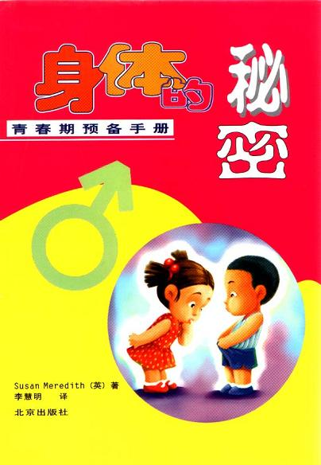

《重构：改善既有代码的设计》

总体观点
1999 年，马丁·福勒把程序员口口相传、没人系统总结过的“整理代码”手法写成书。在此之前“重构”只是高手间的黑话，之后成了每个程序员敢写进简历的正式手艺。
核心观点一句话：不改变软件外部行为的前提下，改善内部结构。用户感觉不到变化，代码更好懂、更好改。几十种手法条条讲清：什么情况用、为什么用、怎么做。
它回答了所有程序员的纠结：“代码太烂，推倒重写还是忍着？”福勒说：别走极端，小步快走，一次改一点，每步都保证能跑。“代码坏味道”这个词也是他发明的。
核心观点
-
1. 重构不改变功能，只改善结构
铁律：改完后软件从外面看必须和原来一模一样——同样输入，同样输出。变的只是代码内部长什么样。
给房子重新布线：住户感觉不到变化，但电工再也不用在乱麻一样的电线里找火线了。 -
2. 先闻闻代码有没有“坏味道”
福勒列了 22 种“代码坏味道”：重复代码、超长函数、参数太多……坏味道不是 bug，代码能跑，但它在提醒你：这里以后会出事。
函数有 8 个参数：createOrder(用户编号, 用户名, 手机号, 地址……)——调用容易传错，改起来提心吊胆。打包成“订单信息”对象。 -
3. 小步快走，每步都能跑
最忌“憋大招”——改三天中间代码一直是坏的，最后祈祷别炸。每步小到不可能出错，改完立刻跑测试确认，再走下一步。
把类拆成两个：新建空类→跑测试→搬一个方法→跑测试→再搬一个。哪步出问题，就是这步的锅，回滚也只回滚一步。 -
4. 戴两顶帽子，别混着戴
“加功能”和“重构”是两顶帽子：戴加功能的帽子只加功能，别顺手改结构；戴重构的帽子只改结构，别顺手加功能。混着做，出 bug 分不清是谁的锅。
加“优惠券”功能发现旧代码太乱：先戴重构帽整理好、测试通过、提交；再换加功能帽，在新结构上加优惠券。分两步，每步都清楚。 -
5. 三次法则：事不过三再抽象
第一次写一段代码，第二次发现类似代码又写一遍，第三次——动手抽象成可复用的。不到三次急着抽象容易抽象错，三次还不动手就是在养坏味道。
“校验手机号”逻辑在注册页、修改资料页、找回密码页出现三次：别再复制，抽成一个函数。规则一变，改一处就行。 -
6. 重构不是重写，别推倒重来
看到烂代码就想全删重写，风险极大：旧代码藏着无数“只有它知道”的业务细节和坑，重写等于全扔了。重构渐进式：旧系统一边跑，一边被一点点替换，风险可控。
十年老计费系统没人敢动。重写派八个月还没摸清特殊折扣规则，新系统上线第一天就算错账。重构派一个模块一个模块整理，老系统一直在线，稳稳过渡。 -
7. 拾穗式重构：顺手的事天天做
重构不用立项排期开大会。改 bug、加功能时路过烂代码，顺手花十分钟整理一下，像农民收麦顺手捡麦穗。每天捡一点，质量不知不觉上去。
修 bug 看到变量名 temp1、temp2，顺手改成 orderTotal、discountAmount。没多花几分钟，下一个读代码的人省十分钟琢磨。
全书结构
-
第1章 重构，第一个案例
以经典的影片出租计费程序为例，演示提炼函数与搬移方法，步步为营且始终保持单元测试全绿。
-
第2章 重构原则
重构是在不改变软件可观察行为的前提下改善其内部结构；戴两顶帽子分别处理功能添加与结构优化。
-
第3章 代码的坏味道
精准识别神秘命名、重复代码、过长函数、过长参数列、发散式变化、霰弹式修改等22种坏味道。
-
第4章 构筑测试体系
自测试代码是重构的安全网，通过完备的自动化单元测试快速发现由于重构带来的非预期破坏。
-
第5章 重构列表
规范重构手法百科的组织结构，统一涵盖重构名称、动机、做法步骤与范例的标准描述格式。
-
第6章 重新组织函数
提炼函数（Extract Method）、内联函数、引入解释性变量以消除冗长混杂的逻辑片段。
-
第7章 在对象之间搬移特性
搬移函数、搬移字段、提炼类与隐藏委托关系，让数据和操作归入最合适的责任归属主体。
-
第8章 重新组织数据
自封装字段、以对象取代基本类型、以常量替换魔法数，实现数据的严密抽象与自验证。
-
第9章 简化条件表达式
分解复杂条件、合并条件表达式、引入卫语句提前返回、以多态取代嵌套 switch 分支。
-
第10章 简化函数调用
函数改名使其意图鲜明，分离查询函数与修改函数（命令查询分离），减少多余参数。
-
第11章 处理概括关系
字段与方法上移下移、提炼超类、以委托取代继承以规避错误的继承层次。
-
第12章 大型重构
梳理复杂的继承层次、将过程化设计转化为领域对象、分离领域逻辑与表现层。
-
第13章 重构，复用与现实
在实际商业交付压力下，如何向管理者证明重构价值并融入敏捷日常节奏，以持续重构支撑系统复用。
-
第14章 重构工具
善用现代化 IDE 提供的自动化安全重构功能，结合单元测试体系提高重构效率与安全性。